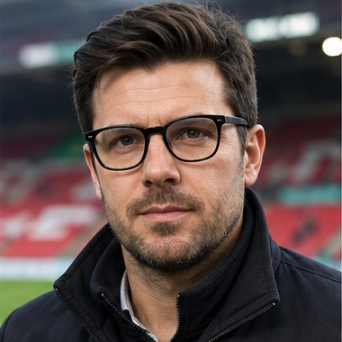
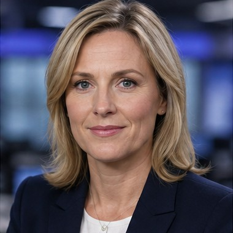
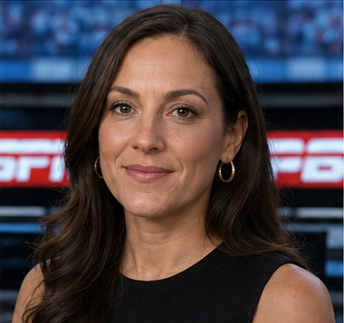
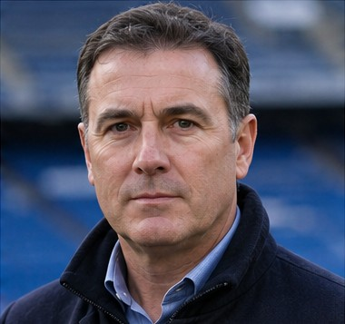

Journalist Profiles
Every recurring voice covering Keeyvon Jenkins' Wrexham, fictional to a person, each with their own outlet, angle, and opinion of the club.

Owen Meredith
Wrexham-born, 34. Covered the club since League Two for WalesOnline. Joined The Athletic UK desk in 2023. Has complicated feelings about the Hollywood era: loves what it did for the club financially, quietly mourns something he can't name.
Voice: Skeptical but fair. Not hostile to Jenkins, but not a cheerleader. Asks the questions the pressroom won't. Opens with a scene, not the result; builds running threads across entries; ends with an open question.
Covers: Match reports, Club news, Injuries, Press conferences, Academy updates
On Wrexham: The external voice — the outside world's view of Jenkins and Wrexham, filed from inside the town itself. Complicated, not hostile.
62 articles →Keeyvon Jenkins
Wrexham's American head coach, in post since January 2025. Keeps a private journal reflecting on the arc of a season rather than any single result — an internal counterpoint to the press coverage, not a piece of media in its own right.
Voice: Reflective, candid, unpolished. Written for himself first. Occasionally in quiet tension with what the press is reporting the same week.
Covers: Manager's diary
On Wrexham: Not a journalist — the club's own voice, included here so his diary can share the same rendering system as the press coverage without being mistaken for it.
10 articles →
Oliver Hargreaves
Raised in Shrewsbury. Former Guardian Northern Football Correspondent before joining Sky Sports in 2018. Has covered seven World Cups and every Champions League Final since 2003. Specializes in football history and legacy pieces.
Voice: Authoritative, historical, measured, thoughtful — never sensational. Connects modern achievements to historical precedents rather than chasing the news cycle.
Covers: Football history, Legacy pieces, Major milestones
On Wrexham: Appears only for milestones, not routine matches. His role is to explain why an achievement matters historically, placing Wrexham's rise inside the wider story of English football.
3 articles →
Rebecca Holt
A BBC Sport staple for over a decade, known for measured, wire-service-straight reporting that breaks news without editorializing. The reporter other outlets check their facts against.
Voice: Objective, plain-spoken, fast. Leads with the fact, not the angle — breaking news and confirmations rather than opinion pieces.
Covers: Breaking news, Transfers, Official confirmations
On Wrexham: Neutral. Covers Wrexham exactly as she'd cover any Premier League club — no romance, no skepticism, just the facts as they land.
1 article →James McAllister
Former academy coach turned writer, recruited by The Athletic for his ability to explain a back-three rotation to a lay reader without losing the nuance a coach would want. Reads a match through shape and recruitment logic before he reads it through results.
Voice: Dense but readable. Leans on data and video review; treats squad-building and recruitment strategy as part of the same story as the tactics on the pitch.
Covers: Tactical analysis, Recruitment strategy, Player development pathways
On Wrexham: Genuinely curious about the club's data-driven approach — an admirer of the process more than a fan of the results, which makes his pieces read as credible rather than cheerleading.
2 articles →Marco Bellini
Turin-based, filing English football for an Italian audience for whom Wrexham's rise reads like a fairy tale imported from another footballing culture. Writes with the romantic tradition of Italian sports journalism — narrative and myth-making over cold analysis.
Voice: Romantic, literary, prone to grand comparisons with continental football history. Writes Wrexham's story as a story, not a results service.
Covers: European reaction, Continental comparisons, Narrative features
On Wrexham: An enchanted outsider. Loves the storybook version of the club and leans into it more than any domestic writer would allow himself to.
0 articles →
Tara Bennett
Covers the growing footprint of American ownership, coaching, and playing talent in English football for a U.S. audience. Tracks Keeyvon Jenkins' career from his USMNT days through to the Wrexham dugout as a single throughline.
Voice: Warm, promotional in tone without being uncritical — writes for readers who are discovering this world through American eyes, translating context a UK audience would take for granted.
Covers: The American angle, Keeyvon Jenkins profile pieces, U.S. talent pipeline
On Wrexham: Personally invested in Jenkins' story as an American succeeding in England's top flight — the most sympathetic of the national voices, though not blind to setbacks.
0 articles →
Darren Cole
Former Premier League centre-back turned studio pundit, built a career on being the voice in the room willing to say the unfashionable thing. Has been wrong about Wrexham before and isn't shy about revisiting it on air.
Voice: Blunt, combative, built for television debate rather than prose — direct quotes and hot-take framing over measured analysis.
Covers: Television debate, Sustainability questions, Contrarian analysis
On Wrexham: The skeptic. Questions whether the rise is sustainable, whether the model survives a bad transfer window or a manager departure — the necessary counterweight to the romantic coverage elsewhere in the Media Centre.
1 article →Gareth Price
A fixture of BBC Radio Wales' sports desk for two decades, calling matches up and down the football pyramid long before Wrexham were a story anyone outside Wales was interested in. Covers the club as part of a wider Welsh football beat, not a Wrexham specialist.
Voice: Warm, conversational, built for the ear rather than the page — short sentences, a broadcaster's instinct for pace, comfortable thinking aloud on air. Less interested in a single club's fortunes than in what they mean for the Welsh game as a whole.
Covers: Radio commentary, Welsh football, Fan and phone-in reaction
On Wrexham: Proudly local, but with a wider brief than Owen Meredith's — Wrexham's rise matters to him as much for what it does for Wales' standing in English football as for the club itself.
0 articles →